00이 매뉴얼에 대하여
장애인 편의시설 설치기준 검토는 건축물의 용도 · 해당 용도 바닥면적 · 공사 구분 · 시설주를 넣으면 장애인등편의법령에 따라 편의시설 설치 대상인지, 어떤 편의시설이 의무 · 권장인지, 각 시설의 세부기준이 무엇인지, BF(장애물 없는 생활환경) 인증 의무가 있는지를 판정하고 A4 검토서로 출력하는 웹 도구입니다. 설계자가 건축허가 전 편의시설 계획을 점검할 수 있도록 화면 순서대로 설명합니다.
| 항목 | 내용 |
|---|---|
| 대상 프로그램 | 장애인 편의시설 설치기준 검토 MANMIN Ver-1.2 (v1.2.1) — 탭 막대 「📘 매뉴얼」 단추로 이 문서가 열립니다 |
| 접속 주소 | manminkim-eng.github.io/Barrier-Free-Facilities |
| 근거 | 「장애인ㆍ노인ㆍ임산부 등의 편의증진 보장에 관한 법률」(2025.12.21. 시행) 제7조 · 제8조 · 제9조 · 제10조의2 · 같은 법 시행령(2026.1.2. 시행) 별표 1 · 2 · 2의2 · 2의3 · 같은 법 시행규칙(2026.7.2. 시행) 별표 1 |
| 예제 | A = 앱 초기값(신축 · 민간 · 사무소 1,200㎡ + 휴게음식점 180㎡) → 의무 7 · 권장 4 · B = 시청 별관 신축(국가 · 지자체) → 의무 14 · 권장 0 · BF 인증 해당 · C = 사무소 증축(기존 450㎡ + 증축 100㎡) → 대상 편입 · 의무 6 · 권장 4 |
| 기준 시점 | 2026-11-09 — 화면 캡처 날짜 고정 · 법령은 2026.7.2. 시행본 기준 |
01한눈에 보기
설치 없이 브라우저에서 바로 실행되는 단일 페이지 앱(PWA)입니다. 입력은 내 PC 브라우저 안에서만 처리되며 서버로 전송되지 않습니다.
무엇을 판정하나
용도별 대상시설 여부, 편의시설 19종의 의무 · 권장 · 제외, 세부기준 체크리스트, BF 인증 의무
자동으로 정해지는 값
별표 2 행(용도 · 규모), 비고 소규모 시설 단서, 주차 10대 미만 제외, 6층 · 2천㎡ 승강기, 객실 · 관람석 수
근거
장애인등편의법 제7조~제10조의2 · 시행령 별표 1 · 2 · 2의2 · 2의3 · 시행규칙 별표 1
출력
A4 편의시설 설치기준 검토서 — 대상 판정 · 편의시설 목록 · 체크리스트 · BF · 참고도(인쇄 · PDF · JPG)
1-1. 화면 구성
- 1작업 탭: 검토 입력 · 검토서 미리보기 · 법적 근거·기준표 · 매뉴얼
- 2요약 스트립: 공사 · 대상 · 의무 · 권장 · BF 인증이 입력할 때마다 갱신
- 3근거 안내: 법 제7조 · 제8조 · 제9조와 도구가 다루는 범위
- 4판정 배너: 의무 · 권장 편의시설 수와 BF 인증 의무
- 5사업 정보: 사업명 · 건축주 · 위치 · 작성자 · 작성일 — 검토서 표제로 들어감
- 6공사 구분 · 시설주
- 7오른쪽 아래 단추: 「건물개요」(다른 도구와 현장 정보 주고받기) · 「판정 안내」 창
| 탭 | 하는 일 | 본문 |
|---|---|---|
| 📝 검토 입력 | 사업 정보, 공사 구분 · 시설주, 건물 규모, 용도별 규모 입력과 실시간 판정 | 3-1~3-7 |
| 📄 검토서 미리보기 | A4 편의시설 설치기준 검토서 미리보기 · 인쇄/PDF · JPG 저장 · 그림 부록 | 3-8~3-9 |
| ⚖️ 법적 근거·기준표 | 법적 근거 · 별표 1 규모 기준 · 별표 2 의무/권장 표 · 세부기준 그림 18 | 3-10~3-11 |
| 📘 매뉴얼 | 이 매뉴얼을 새 창으로 엽니다(인터넷 연결 필요) | 1-3 |
1-2. 작업 탭·근거 표시
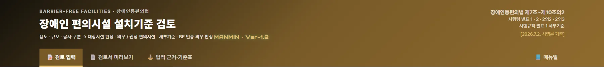
12345- 1검토 입력
- 2검토서 미리보기
- 3법적 근거·기준표
- 4📘 매뉴얼 — 이 매뉴얼을 새 창으로(탭 막대 오른쪽 끝)
- 5근거 법령 · 시행본 기준일
헤더 오른쪽에는 근거 조문과 「2026.7.2. 시행본 기준」이 적혀 있습니다. 법령이 개정되면 이 표시와 4장 내용을 함께 확인하십시오.
1-3. 설치·보관·매뉴얼
| 항목 | 내용 |
|---|---|
| 설치(선택) | 크롬 · 엣지 주소창의 설치 아이콘 또는 화면 아래 설치 안내를 누르면 홈 화면 · 바탕화면에 앱으로 설치됩니다. 아이폰은 사파리 공유 단추 → 「홈 화면에 추가」 |
| 오프라인 | 한 번 연 뒤에는 인터넷이 끊겨도 판정 · 출력이 됩니다. 매뉴얼은 인터넷에 연결되어 있을 때만 열립니다(끊겨 있으면 「매뉴얼은 인터넷 연결 시 열립니다」 안내) |
| 입력값 보관 | 입력값은 저장되지 않습니다. 창을 닫거나 새로 고치면 초기값으로 돌아가므로 결과는 검토서(PDF · JPG)로 남기십시오. 사업명 · 위치 · 건축주 · 작성자 · 연면적 · 층수는 「건물개요」 단추로 이 브라우저에 담아 두었다가 다른 MANMIN 도구에서 불러올 수 있습니다 |
| 업데이트 | 새 버전이 올라오면 다음 접속 때 자동으로 바뀝니다. 화면이 예전 그대로면 새로 고침(Ctrl+F5) |
023분 따라하기
예제 A(초기값)로 6단계를 따라 하면 판정 배너에 「의무 7 · 권장 4」가 나옵니다. 계산 단추는 없습니다. 값을 바꾸는 즉시 판정이 바뀝니다.
- 공사 구분 · 시설주「공사 구분 · 시설주」 카드에서 공사 구분과 시설주를 고릅니다. 예제는 신축 · 그 밖의 자(민간)입니다(3-2).
- 건물 규모「건물 규모」에 연면적 · 층수 · 부설주차 대수를 넣습니다. 예제는 연면적 1,680㎡ · 지상 5층 · 지하 1층 · 주차 14대입니다(3-3).
- 용도별 규모「용도별 규모」에 용도와 해당 용도 바닥면적 합계를 넣습니다. 예제는 사무소 1,200㎡ + 휴게음식점 180㎡ — 칸 아래에 「대상」과 근거가 바로 나옵니다(3-4).
- 판정 결과 확인판정 배너에 의무 7 · 권장 4, 「설치 편의시설」에 의무 · 권장 시설 칩, 「BF 인증 의무」에 해당 없음이 표시됩니다(3-5~3-7).
- 검토서 확인「📄 검토서 미리보기」 탭에서 대상 판정 · 편의시설 목록 · 세부기준 체크리스트 · BF 판정을 확인합니다(3-9).
- 인쇄 · 저장「인쇄 / PDF 저장」 또는 「JPG 저장」으로 검토서를 남깁니다. 세부기준 그림을 함께 넣으려면 「세부기준 그림(참고도) 부록 포함」을 체크합니다(3-8).
| 항목 | 예제 A 판정 | 비고 |
|---|---|---|
| 용도 1 — 사무소 1,200㎡ | 해당 용도 1,200㎡ ≥ 500㎡ | 대상 · 별표 2 업무시설(500㎡ 이상) 행 |
| 용도 2 — 휴게음식점 180㎡ | 50㎡ ≤ 180㎡ < 300㎡ — 제1종 근린생활시설 기준 | 대상 · 별표 2 제1종 근생 휴게음식점 행 |
| 의무 7종 | 주출입구 접근로 · 장애인전용 주차구역 · 주출입구 높이차이 제거 · 출입구(문) · 복도 · 계단 또는 승강기 · 화장실 — 대변기 | 두 용도 중 하나라도 의무면 의무 |
| 권장 4종 | 화장실 — 소변기 · 화장실 — 세면대 · 접수대 · 작업대 · 임산부 등을 위한 휴게시설 | — |
| 주차 | 부설주차 14대 ≥ 10대 → 장애인전용주차구역 설치 | 대수는 「부설주차장」 도구 |
| BF 인증 | 민간 · 초고층 아님 → 의무 없음 | 별표 2의3 제6호 |
03화면별 기능 상세
검토 입력 탭의 카드 순서와 나머지 탭 순서로 설명합니다. 왼쪽 열은 사업 정보 · 공사 구분 · 건물 규모, 오른쪽 열은 용도별 규모 · 설치 편의시설 · BF 인증 의무입니다.
3-1. 사업 정보
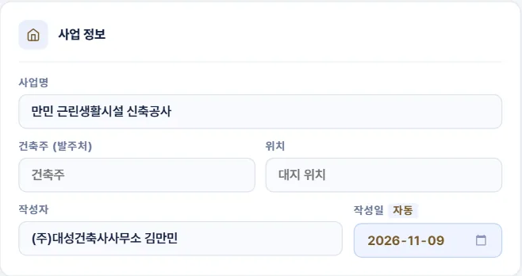
12345- 1사업명 — 검토서 「사 업 명」
- 2건축주(발주처)
- 3위치
- 4작성자 — 검토서 서명란
- 5작성일 — 처음 열 때 오늘 날짜(「자동」)
사업 정보는 판정에 영향을 주지 않고 검토서에만 들어갑니다.
3-2. 공사 구분 · 시설주
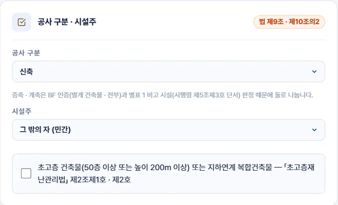
123- 1공사 구분 — 9종
- 2시설주 — 4종(BF 인증 의무 판정에 쓰임)
- 3초고층 · 지하연계 — 민간 시설주일 때 BF 판정용 체크
| 공사 구분 | 편의시설 설치기준 | BF 인증(공공) |
|---|---|---|
| 신축 | 모든 대상시설에 적용 | 의무 대상 |
| 증축 — 대지 안 별개 건축물 | 적용(비고 소규모 시설 포함) | 의무 대상 |
| 증축 — 기존 건축물에 붙여서 | 적용 — 기존 + 증축 2칸 입력 · 적용 범위 3단계(4-7) | 대상 아님 |
| 개축 — 전부 | 적용(비고 소규모 시설 포함) | 의무 대상 |
| 개축 — 일부 | 적용 · 적용 범위 3단계 | 대상 아님 |
| 재축 | 적용(비고 소규모 시설 포함) | 의무 대상 |
| 이전 · 대수선 | 적용 · 적용 범위 3단계 | 대상 아님 |
| 용도변경 | 적용 — 기존(같은 용도) + 늘어남 2칸 입력 · 적용 범위 3단계 | 대상 아님 |
- 별표 1 비고의 소규모 공중이용시설(소매점 · 휴게음식점 · 이용원 · 미용원 · 일반음식점 50㎡ 미만, 목욕장 300㎡ 미만, 의원 등 100㎡ 미만)은 별개 건축물 증축 · 전부 개축 · 재축일 때만 적용합니다(시행령 제5조제3호 단서, 4-3).
- 시설주가 「그 밖의 자(민간)」이면 「초고층 · 지하연계」 체크가 나타납니다. 50층 이상 또는 높이 200m 이상 건축물이거나 지하연계 복합건축물이면 체크합니다.
3-3. 건물 규모
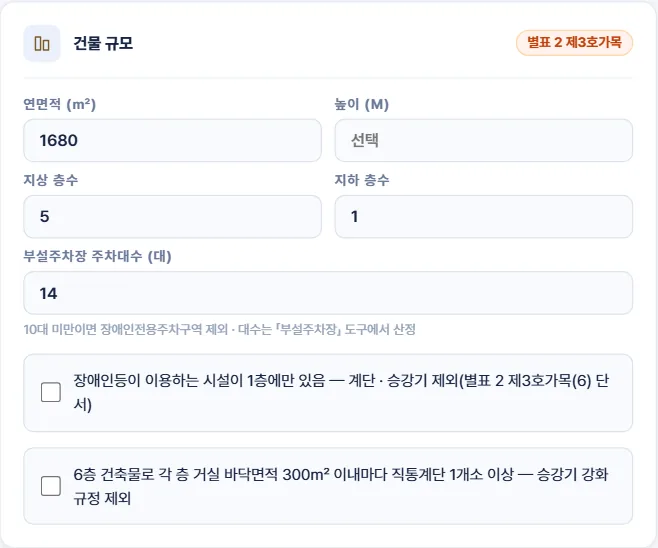
1234567- 1연면적(㎡) — 6층 · 2천㎡ 승강기 판정
- 2높이(m) — 초고층(200m) 안내
- 3지상 층수
- 4지하 층수
- 5부설주차 대수 — 10대 미만이면 장애인전용주차구역 제외
- 6「장애인등이 이용하는 시설이 1층에만 있음」 — 계단 · 승강기 제외 단서
- 7「6층 · 각 층 거실 300㎡마다 직통계단」 — 승강기 강화 규정 예외
연면적 · 층수는 건축물 전체 값을 넣습니다. 증축 · 용도변경이면 변경 후 전체입니다. 두 체크 칸은 별표 2 제3호가목(6)의 단서를 적용할 때만 체크합니다.
3-4. 용도별 규모
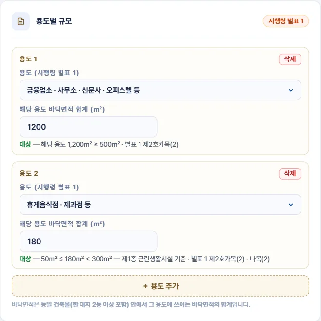
123456- 1용도 1 — 시행령 별표 1의 용도 52종
- 2해당 용도 바닥면적 합계(㎡)
- 3판정 — 대상 · 대상 아님 · 확인 필요와 근거 조문
- 4용도 2
- 5판정
- 6「＋ 용도 추가」 — 복합 용도
- 면적은 연면적이 아니라 동일한 건축물 안에서 그 용도에 쓰이는 바닥면적의 합계입니다. 한 대지 안에 2동 이상이면 동일한 건축물로 봅니다(별표 1 제2호가목(1)).
- 숙박시설은 객실 수, 공동주택은 세대 수, 기숙사는 기숙 인원과 침실 수, 공연장 · 집회장 · 관람장 · 종교집회장 · 운동시설은 관람석 수, 도서관은 열람석 수 칸이 함께 나옵니다.
- 공사 구분이 「증축 — 기존 건축물에 붙여서」나 「용도변경」이면 면적 · 수량 칸이 「기존 + 증축(변경)」 2칸으로 바뀝니다. 판정은 합계로 하고, 기존만으로는 미달인데 합계로 대상이 되면 「대상 편입」으로 표시합니다(5-4).
- 「확인 필요」는 선택한 용도가 별표의 명칭과 정확히 맞지 않거나(예: 1천㎡ 이상인 제1종 근생 공공시설, 500㎡ 미만 교육원), 시행령 제5조제3호 단서처럼 해석이 필요한 경우입니다. 추정하지 않고 확인 대상으로 둡니다.
3-5. 설치 편의시설
- 1의무 — 빨간 칩
- 2권장 — 주황 칩
별표 2 표에서 대상 용도 행을 모아 19종 편의시설을 의무 · 권장 · 제외로 보여 줍니다. 회색 「제외」 칩은 주차 10대 미만처럼 단서로 설치 대상에서 빠진 시설입니다. 시설별 설치기준 · 세부기준은 검토서와 「법적 근거·기준표」 탭에 나옵니다.
3-6. BF 인증 의무
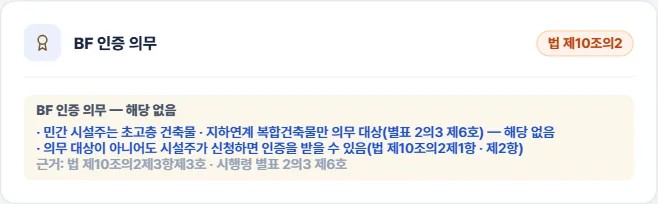
1- 1판정 — 해당 · 해당 없음 · 확인 필요와 근거
시설주와 공사 구분으로 법 제10조의2제3항의 의무 인증 대상인지 판정합니다. 의무 대상이 아니어도 시설주가 신청하면 인증을 받을 수 있다는 안내가 함께 나옵니다(4-8).
3-7. 요약 스트립 · 판정 배너
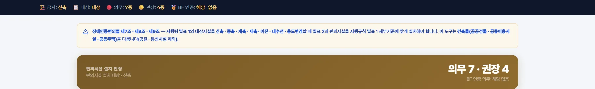
1234567- 1공사 구분
- 2대상 여부
- 3의무 편의시설 수
- 4권장 편의시설 수
- 5BF 인증
- 6판정 배너 — 의무 · 권장 수
- 7BF 인증 의무
입력을 바꿀 때마다 요약 스트립과 배너가 바로 바뀝니다. 대상 용도가 하나도 없으면 배너에 「대상 아님」이 표시됩니다.
3-8. 검토서 미리보기 · 출력
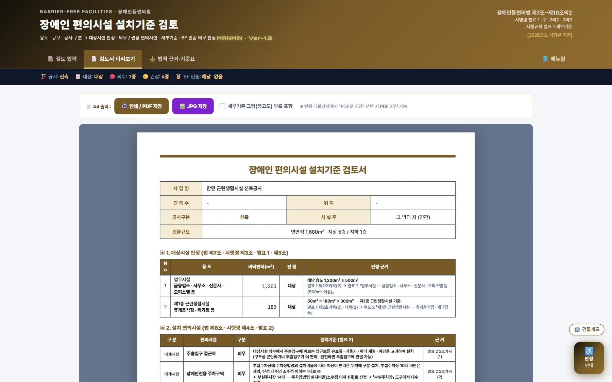
1234- 1「🖨️ 인쇄 / PDF 저장」 — 브라우저 인쇄 창(대상 프린터에서 「PDF로 저장」)
- 2「🖼️ JPG 저장」 — 검토서를 그림 파일로 저장
- 3「세부기준 그림(참고도) 부록 포함」 — 체크하면 설치 대상 시설의 그림을 검토서 끝에 붙임
- 4A4 검토서
- 인쇄는 A4 세로 · 흰 배경 · 쪽마다 머리행 반복입니다. 그림 부록을 넣지 않으면 예제 A 기준 4쪽입니다.
- 체크리스트의 「그림 ①」 같은 단추를 누르면 해당 세부기준 그림이 창으로 열립니다(3-11). 단추는 인쇄되지 않습니다.
3-9. A4 검토서 구성
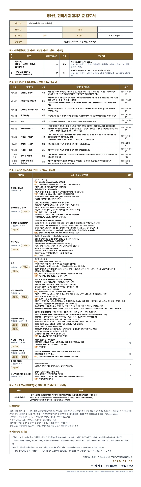
1234567- 1사업 개요 — 사업명 · 건축주 · 위치 · 공사 구분 · 시설주 · 건물 규모
- 21. 대상시설 판정 — 용도별 바닥면적 · 판정 · 근거 · 별표 2 행
- 32. 설치 편의시설 — 구분 · 의무/권장 · 별표 2 설치기준
- 43. 세부기준 체크리스트 — 시행규칙 별표 1 수치 · 확인란
- 54. BF 인증 의무
- 6유의사항
- 7적용 법령 및 기준
| 조건부 절 | 내용 |
|---|---|
| 1-2. 증축 · 변경 시 적용 범위 | 공사 구분이 신축 · 별개 건축물 증축 · 전부 개축 · 재축이 아닐 때만 나옵니다 — ① 건축물 전체 산정 ② 변경 부분 + 이용 동선 ③ 손대지 않는 기존 부분(4-7) |
| 5. 세부기준 참고도 | 「그림 부록 포함」을 체크했을 때만 나옵니다 |
3-10. 법적 근거 · 기준표 탭
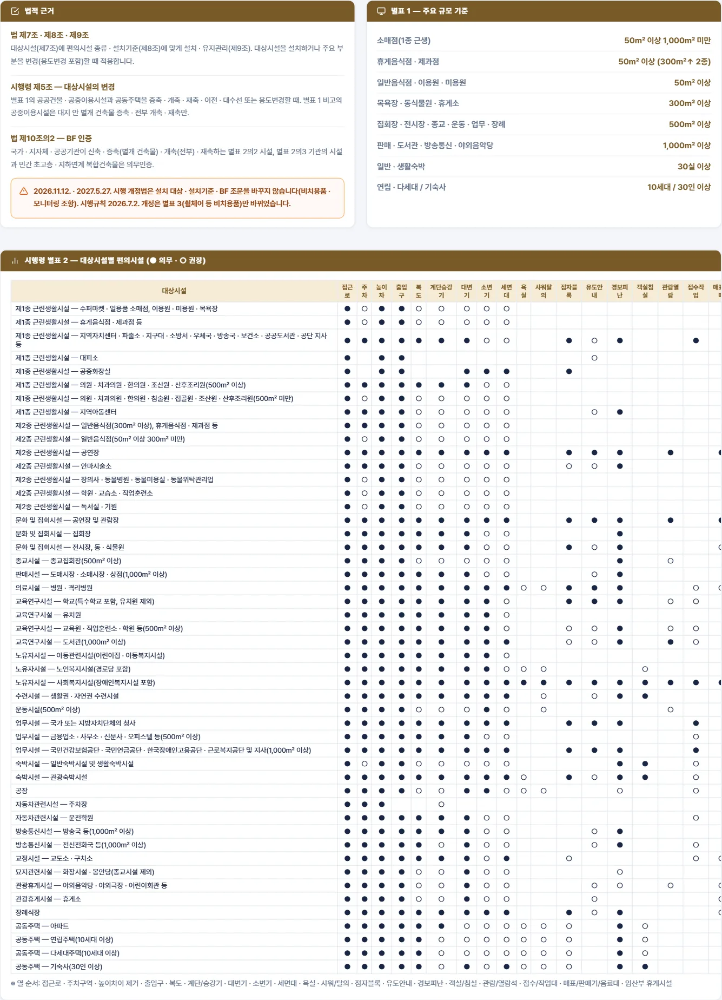
123- 1법적 근거 — 법 제7조~제10조의2 · 시행령 · 시행규칙 조문 요약
- 2별표 1 — 주요 규모 기준
- 3별표 2 — 대상시설별 편의시설 의무(●) · 권장(○) 전체 표
별표 2 표에서 지금 검토 중인 대상 용도의 행이 강조됩니다. 다른 용도의 의무 · 권장을 비교할 때 씁니다.
3-11. 세부기준 그림 18
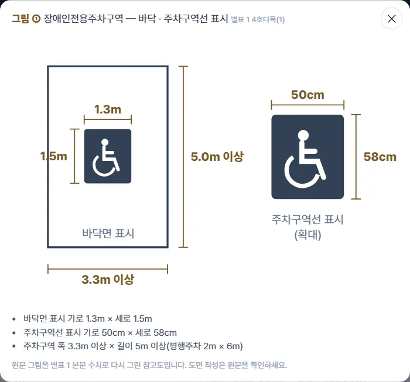
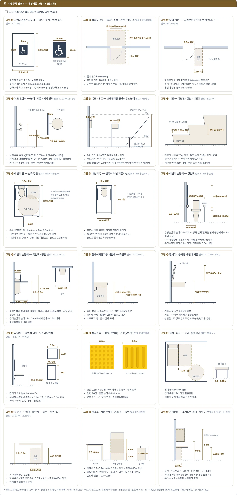
12- 1「지금 검토 중인 설치 대상 편의시설 그림만 보기」
- 2그림 18장
시행규칙 별표 1의 그림 18개를 본문 수치로 다시 그린 참고도입니다. 체크리스트의 그림 단추, 기준표 탭의 그림 모음, 검토서 부록 세 곳에서 볼 수 있습니다. 도면 작성은 원문 그림으로 확인하십시오.
3-12. 판정 안내 창
오른쪽 아래 「♿ 판정 안내」 단추를 누르면 4개 탭이 있는 안내 창이 열립니다.
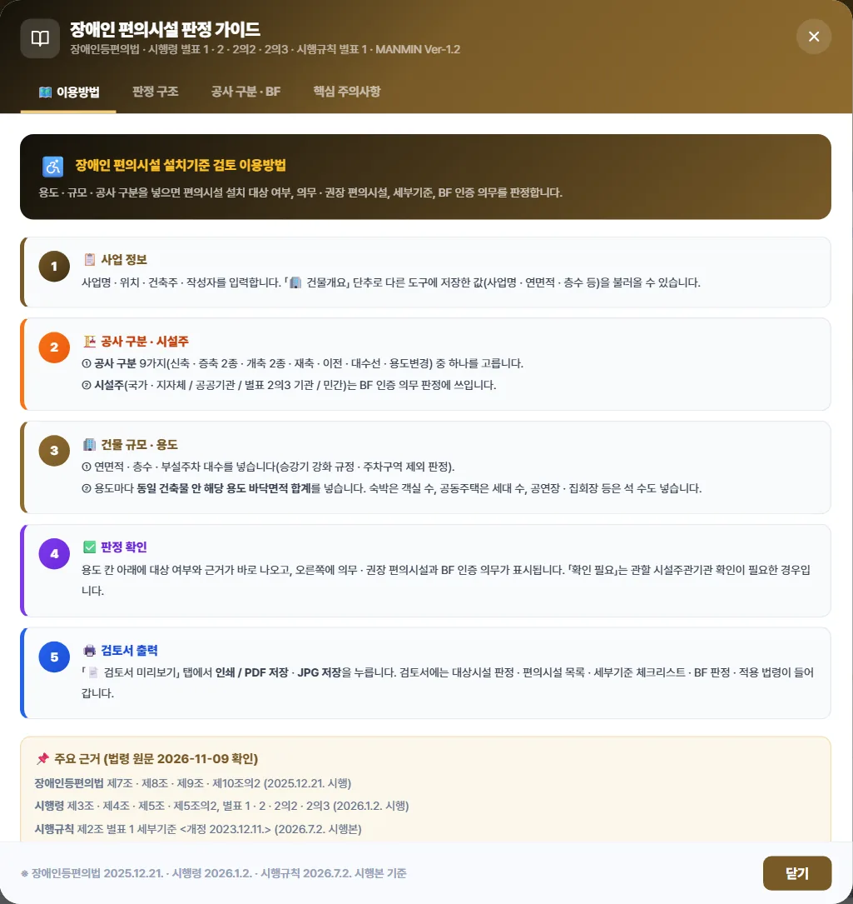
1234- 1이용방법
- 2판정 구조
- 3공사 구분 · BF
- 4핵심 주의사항
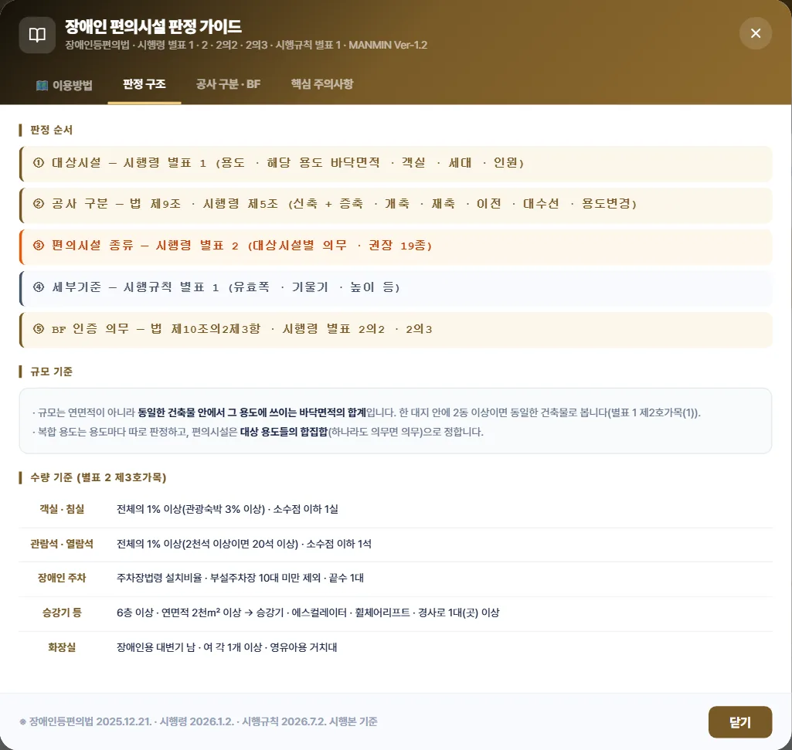
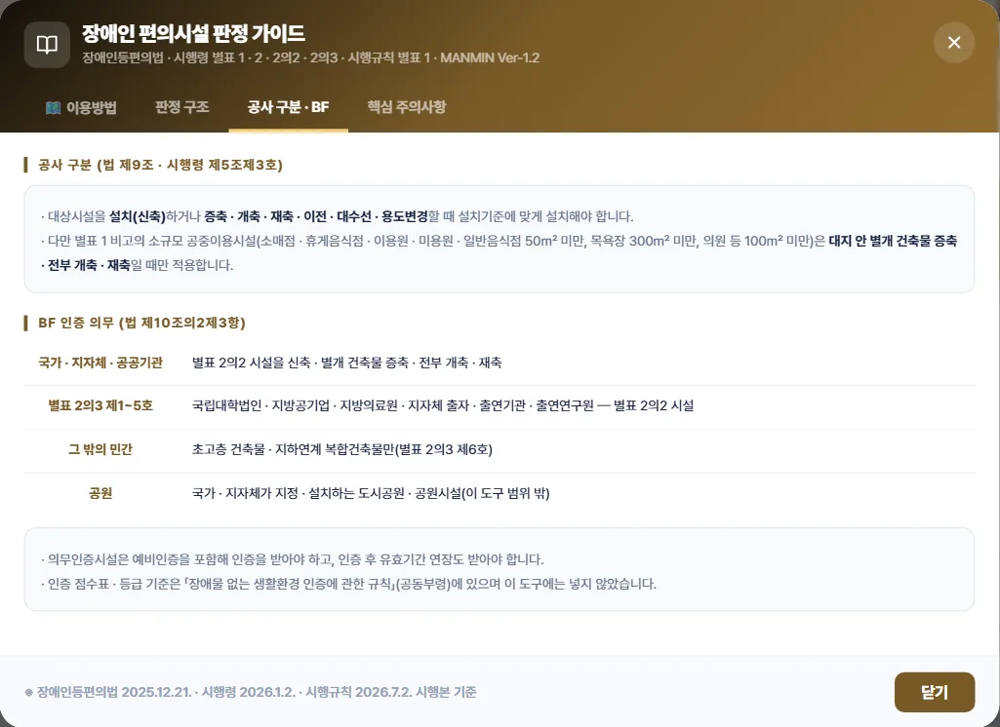
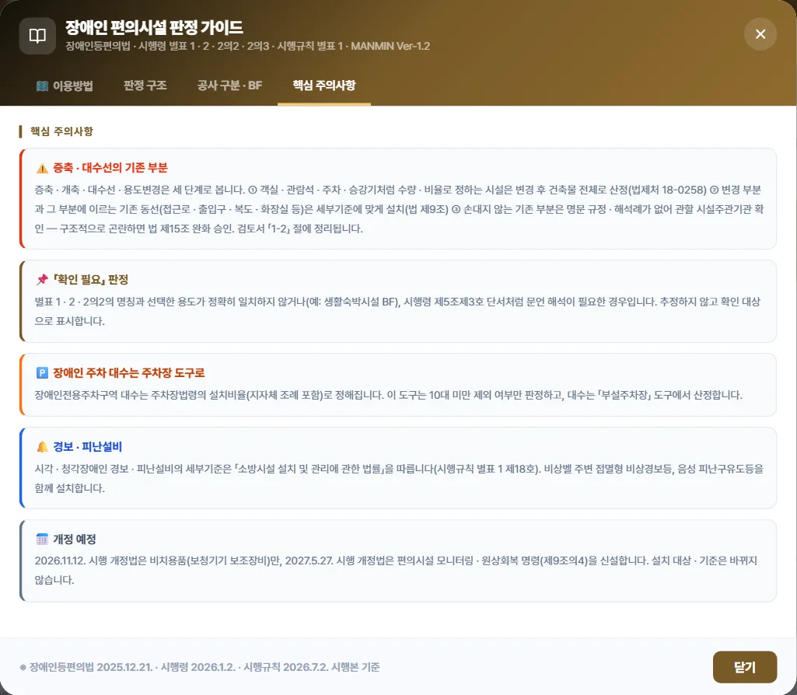
3-13. 모바일
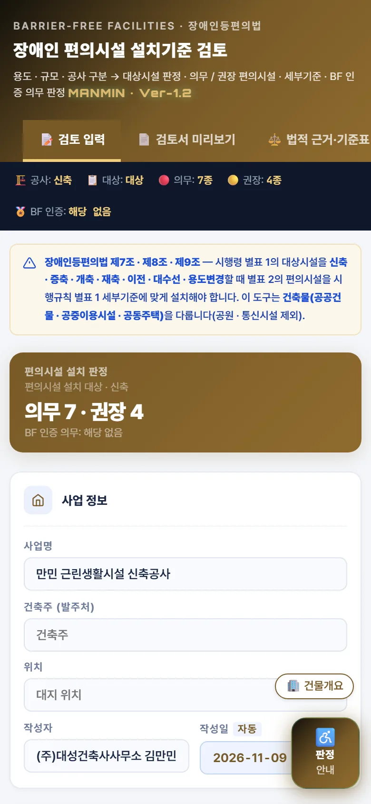
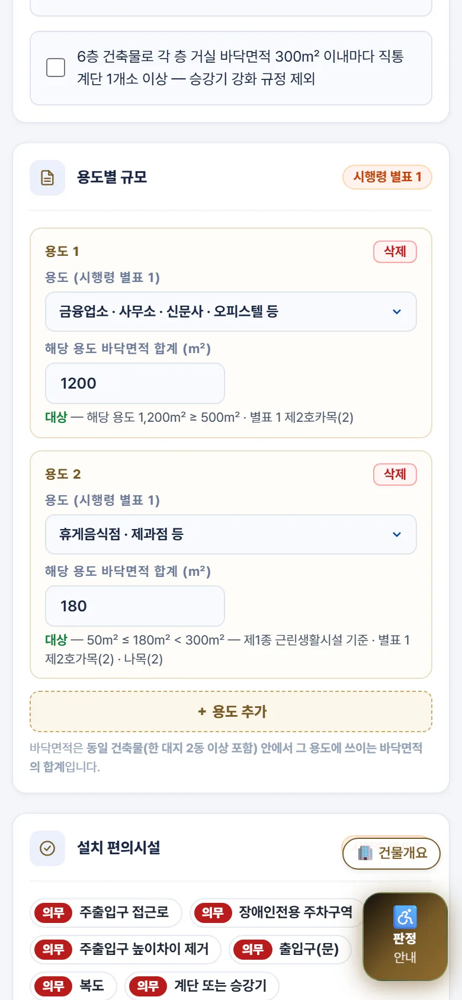
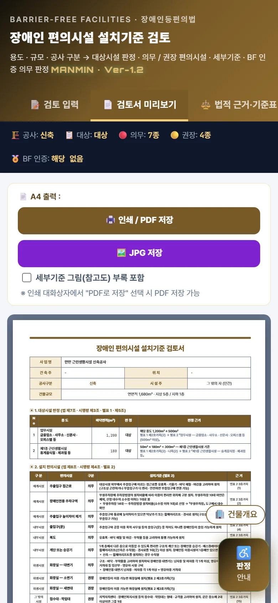
폭이 좁은 화면에서는 카드가 한 줄로 쌓이고 검토서는 화면 폭에 맞춰 줄여 보입니다. 인쇄 · PDF는 PC와 같은 A4로 나옵니다.
04기술기준 해설
법령 원문은 법령 정보(LawMCP)로 2026-11-09에 조회했습니다. 이 장은 도구가 판정에 쓰는 규정만 정리합니다.
4-1. 근거 법령
| 구분 | 법령 | 공포 · 시행 | 도구가 쓰는 조항 |
|---|---|---|---|
| 법률 | 장애인ㆍ노인ㆍ임산부 등의 편의증진 보장에 관한 법률 | 2024.12.20. 공포 · 2025.12.21. 시행 | 제7조 대상시설 · 제8조 설치기준 · 제9조 시설주의 의무 · 제9조의2 적합성 확인 · 제10조의2 인증 · 제15조 적용 완화 |
| 시행령 | 같은 법 시행령 | 2025.12.30. 공포 · 2026.1.2. 시행 | 제3조 · 별표 1 대상시설 · 제4조 · 별표 2 종류 · 설치기준 <개정 2024.9.19.> · 제5조 · 제5조의2 · 별표 2의2 · 2의3 · 제7조 |
| 시행규칙 | 같은 법 시행규칙 | 2026.4.1. 공포 · 2026.7.2. 시행 | 제2조 · 별표 1 편의시설의 구조 · 재질 등 세부기준 <개정 2023.12.11.> |
4-2. 대상시설 — 시행령 별표 1
규모 기준은 모두 「동일한 건축물 안에서 해당 용도에 쓰이는 바닥면적의 합계」입니다. 하나의 대지 안에 2동 이상이 있으면 동일한 건축물로 봅니다.
| 용도 | 대상 규모 | 별표 1 제2호 |
|---|---|---|
| 제1종 근생 — 소매점 | 50㎡ 이상 1,000㎡ 미만(1천㎡ 이상은 판매시설) | 가목(1) |
| 제1종 근생 — 휴게음식점 · 제과점 | 50㎡ 이상 300㎡ 미만(300㎡ 이상은 제2종 근생) | 가목(2) · 나목(2) |
| 제1종 근생 — 이용원 · 미용원 / 목욕장 | 50㎡ 이상 / 300㎡ 이상 | 가목(3) · (4) |
| 제1종 근생 — 지역자치센터 · 파출소 · 우체국 · 보건소 · 공공도서관 · 공단 지사 등 | 1,000㎡ 미만 | 가목(5) |
| 제1종 근생 — 대피소 · 공중화장실 · 의원 등 · 지역아동센터 | 규모 관계없음 | 가목(6)~(9) |
| 제2종 근생 — 일반음식점 | 50㎡ 이상 | 나목(1) |
| 제2종 근생 — 공연장 · 학원 등 | 500㎡ 미만 | 나목(3) · (6) |
| 집회장 · 전시장 · 종교집회장 · 운동시설 · 사무소 등 · 장례식장 | 500㎡ 이상 | 다목 · 라목 · 차목 · 카목(2) · 머목 |
| 동 · 식물원 · 휴게소 | 300㎡ 이상 | 다목(5) · 러목(2) |
| 판매시설 · 도서관 · 방송통신시설 · 공단(지사) · 야외음악당 등 | 1,000㎡ 이상 | 마목 · 사목(3) · 너목 · 카목(3) · 러목(1) |
| 일반 · 생활숙박시설 | 객실 30실 이상 | 타목(1) |
| 연립 · 다세대주택 / 기숙사 | 10세대 이상 / 30인 이상 | 제3호 |
| 병원 · 학교 · 노유자 · 수련 · 청사 · 관광숙박 · 공장 · 주차장 · 교정 · 묘지 · 아파트 | 규모 관계없음(공장은 장애인고용의무 사업주) | 바목 · 사목 · 아목 · 자목 · 카목(1) · 타목(2) · 파목 · 하목 · 거목 · 더목 |
4-3. 공사 구분 — 법 제9조 · 시행령 제5조
시설주는 대상시설을 설치(신축)하거나 증축 · 개축 · 재축 · 이전 · 대수선 · 용도변경할 때 편의시설을 설치기준에 맞게 설치해야 합니다(시행령 제5조제3호). 다만 별표 1 비고의 공중이용시설은 대지 안 별개 건축물 증축 · 전부 개축 · 재축일 때만 적용합니다.
| 비고 | 시설 | 규모 |
|---|---|---|
| 비고 1 | 소매점 · 휴게음식점 · 이용원 · 미용원(가목(1)~(3)) · 일반음식점(나목(1)) | 50㎡ 미만 |
| 비고 2 | 목욕장(가목(4)) | 300㎡ 미만 |
| 비고 3 | 의원 · 치과의원 · 한의원 · 침술원 · 접골원 · 조산원 · 산후조리원(가목(8)) | 100㎡ 미만 |
도구는 비고 시설에서 공사 구분이 위 세 가지가 아니면 「대상 아님(단서 적용 제외)」으로, 세 가지이면서 규모가 별표 1 하한에 못 미치면 「확인 필요」로 표시합니다.
4-4. 편의시설 종류 — 시행령 별표 2
별표 2 제3호나목(공공건물 · 공중이용시설 45행)과 제4호나목(공동주택 4행) 표가 대상시설별로 편의시설 19종의 의무 · 권장을 정합니다. 도구의 표는 원문 49행 × 19열과 한 칸씩 대조했습니다(verify_bff_judge.js).
| 구분 | 편의시설 |
|---|---|
| 매개시설 | 주출입구 접근로 · 장애인전용주차구역 · 주출입구 높이차이 제거 |
| 내부시설 | 출입구(문) · 복도 · 계단 또는 승강기 |
| 위생시설 | 화장실(대변기 · 소변기 · 세면대) · 욕실 · 샤워실 · 탈의실 |
| 안내시설 | 점자블록 · 유도 및 안내설비 · 경보 및 피난설비 |
| 그 밖의 시설 | 객실 · 침실 · 관람석 · 열람석 · 접수대 · 작업대 · 매표소 · 판매기 · 음료대 · 임산부 등을 위한 휴게시설 |
복합 용도는 용도마다 별표 2 행을 찾고, 편의시설은 대상 용도 행들의 합집합으로 정합니다(하나라도 의무면 의무, 아니면 권장). 공동주택 행에서 온 시설은 공동주택 기준(제4호가목)을 따릅니다.
4-5. 수량으로 정하는 시설 — 별표 2 제3호가목
| 시설 | 기준 | 별표 2 제3호가목 |
|---|---|---|
| 장애인전용주차구역 | 주차장법령 설치비율 · 부설주차장 10대 미만 제외 · 끝수는 1대 | (2) |
| 계단 또는 승강기 | 1개 층에서 다른 층으로 이동할 계단 · 승강기 · 에스컬레이터 · 휠체어리프트(신축은 수직형) · 경사로 1대(곳) 이상 — 이용 시설이 1층에만 있으면 제외. 6층 이상 · 연면적 2천㎡ 이상이면 계단만으로는 안 되고 승강기 등 1대(곳) 이상(6층 · 각 층 거실 300㎡마다 직통계단이면 예외) | (6) |
| 화장실 | 장애인용 대변기 남자용 · 여자용 각 1개 이상 · 영유아용 거치대 | (7) |
| 객실 · 침실 | 전체의 1% 이상(관광숙박 3% 이상) · 끝수는 1실 | (13) |
| 관람석 · 열람석 | 전체의 1% 이상(2천석 이상이면 20석 이상) · 끝수는 1석 | (14) |
| 출입구(문) | 국가 · 지자체 청사(공중이 직접 이용, 제1종 근생 아닌 것)는 자동문 | (4) |
4-6. 세부기준 — 시행규칙 별표 1
시행규칙 별표 1은 시설별 유효폭 · 기울기 · 높이 같은 수치를 정합니다. 도구의 체크리스트는 원문 문장을 짧게 줄였고, 「할 수 있다」로 된 항목은 [권장]으로 표시했습니다.
| 시설 | 주요 수치 | 규칙 별표 1 |
|---|---|---|
| 접근로 | 유효폭 1.2m 이상 · 기울기 1/18 이하(지형상 곤란하면 1/12) · 단차 2cm 이하 | 1호 |
| 장애인전용주차구역 | 1대당 폭 3.3m 이상 × 길이 5.0m 이상(평행주차 2.0m × 6.0m) | 4호 |
| 높이차이 제거 · 경사로 | 높이차이 2cm 이하 · 경사로 유효폭 1.2m 이상 · 기울기 1/12 이하 · 높이 0.75m마다 참 | 5호 · 12호 |
| 출입구(문) | 통과유효폭 0.9m 이상 · 전면 유효거리 1.2m 이상 · 문턱 금지(부득이 2cm 이하) | 6호 |
| 복도 | 유효폭 1.2m 이상(양옆 거실이면 1.5m 권장) · 손잡이 0.8~0.9m | 7호 |
| 계단 · 승강기 | 계단 유효폭 1.2m · 디딤판 0.28m 이상 · 챌면 0.18m 이하 / 승강기 내부 1.1m × 1.35m 이상(신축 폭 1.6m 이상) | 8~11호 |
| 화장실 대변기칸 | 신축 폭 1.6m × 깊이 2.0m 이상(기존시설로 곤란할 때 1.0m × 1.8m) · 좌대 0.4~0.45m | 13호 |
| 세면대 | 상단 0.85m 이하 · 하단 0.65m 이상 | 13호라목 |
4-7. 증축 · 변경 적용 범위 (v1.2)
신축 · 별개 건축물 증축 · 전부 개축 · 재축이 아닌 공사에서 기존 부분까지 어디를 맞춰야 하는지는 법령에 명문 규정이 없습니다. 도구는 해석례를 근거로 세 단계로 정리합니다.
| 단계 | 내용 | 근거 |
|---|---|---|
| 대상 판정 | 기존 + 증가(변경) 면적을 합산해 별표 1 규모와 비교 · 한 대지 안 여러 동도 합산 | 법제처 08-0249 · 08-0190 |
| ① 건축물 전체 산정 | 객실 · 침실 수, 관람석 · 열람석 수, 부설주차 대수, 6층 · 2천㎡ 승강기는 변경 후 건축물 전체로 산정(객실 아닌 부분을 증축해도 전체 객실 3%) | 법제처 18-0258 · 별표 2 |
| ② 변경 부분 + 이용 동선 | 증축 · 변경 부분과 그 부분에 이르는 기존 접근로 · 출입구 · 복도 · 계단 또는 승강기 · 화장실은 세부기준에 맞게 설치 | 법 제9조 · 시행령 제5조제3호 |
| ③ 손대지 않는 기존 부분 | 명문 규정 · 해석례가 없어 「확인 필요」 — 구조적으로 곤란하면 완화한 별도 기준을 정해 시설주관기관 승인(전문가 3인 이상 의견). 설치계획 · 협의로 종류 · 기준을 줄일 수는 없음 | 법 제15조 · 시행령 제7조 · 법제처 24-0558 |
| 적용 시점 | 증축 허가 · 신고 당시의 현행 기준(종전 기준 경과조치는 그 대상에 한정) | 법제처 23-0733 |
4-8. BF 인증 의무 — 법 제10조의2제3항
| 시설주 | 의무 인증 대상 | 근거 |
|---|---|---|
| 국가 · 지방자치단체 | 별표 2의2 시설을 신축 · 별개 건축물 증축 · 전부 개축 · 재축 | 법 제10조의2제3항제2호 · 별표 2의2 |
| 「공공기관의 운영에 관한 법률」에 따른 공공기관 | 같음 | 같음 |
| 국립대학법인 · 지방공기업 · 지방의료원 · 지자체 출자 · 출연기관 · 출연연구원 | 별표 2의2 시설(같은 공사 구분) | 제3호 · 별표 2의3 제1~5호 |
| 그 밖의 자(민간) | 초고층 건축물 · 지하연계 복합건축물만 | 제3호 · 별표 2의3 제6호 |
- 의무 대상은 예비인증을 포함해 본인증을 받아야 하고, 인증 후 유효기간 연장도 받아야 합니다.
- 공동주택(아파트 등)만으로는 민간 초고층이어도 공공건물 · 공중이용시설 용도가 없으면 의무 대상이 아닙니다.
- 인증 점수표 · 등급은 「장애물 없는 생활환경 인증에 관한 규칙」(공동부령)에 있으며 이 도구에는 넣지 않았습니다.
4-9. 개정 예정
| 시행 | 내용 |
|---|---|
| 2026.11.12. 시행(법률 제21116호) | 제16조 비치용품에 보청기기 보조장비 추가 — 설치 대상 · 기준 변화 없음 |
| 2027.5.27. 시행(법률 제21697호) | 제9조의4 편의시설 모니터링 · 원상회복 명령 신설 — 설치 대상 · 기준 변화 없음 |
4-10. 다루지 않는 것
- 공원 · 통신시설(공중전화 · 우체통) — 별표 1 제1호 · 제4호
- 장애인전용주차구역 대수 — 주차장법령과 지자체 조례로 정함 → MANMIN 「부설주차장 법정대수 산정기」
- BF 인증 점수 · 등급 · 인증 절차
- 시행규칙 별표 3 휠체어 등 비치용품
- 공동주택 부대 · 복리시설의 별도 판정(별표 2 제4호가목(10)) — 해당 용도를 따로 넣어 판정하십시오
05실무 작업 방법
5-1. 단계별 절차
| 단계 | 도구 사용 |
|---|---|
| 기획 · 계획설계 | 용도 구성안마다 용도별 바닥면적을 넣어 대상 여부와 의무 시설을 확인 · 6층 · 2천㎡ 경계와 주차 10대 경계 점검 |
| 기본설계 | 의무 · 권장 목록으로 평면에 접근로 · 주차구역 · 승강기 · 장애인 화장실 위치를 정함 · BF 인증 의무면 인증 일정 반영 |
| 실시설계 | 세부기준 체크리스트로 유효폭 · 기울기 · 치수를 도면에 기입 · 세부기준 그림 부록을 설계 검토 자료로 첨부 |
| 허가 신청 | 검토서를 편의시설 설치계획 검토 자료로 첨부 — 적합성 확인(법 제9조의2)은 시설주관기관 절차 |
| 증축 · 용도변경 | 기존 + 증가를 2칸에 나눠 넣고 검토서 1-2절로 적용 범위를 정리 · ③ 기존 부분은 시설주관기관과 미리 확인 |
5-2. 제출 전 확인
- 용도 분류가 건축법 시행령 별표 1과 같은지(특히 제1종 · 제2종 근생 경계 면적)
- 해당 용도 바닥면적이 동일 건축물(한 대지 여러 동 포함) 합계인지
- 연면적 · 층수가 변경 후 건축물 전체인지
- 「확인 필요」 항목을 시설주관기관에 확인했는지
- 장애인전용주차구역 대수를 「부설주차장」 도구 또는 조례로 산정했는지
- BF 의무 대상이면 예비인증 시점(설계 단계)을 놓치지 않았는지
5-3. 예제 B — 시청 별관 신축(국가 · 지자체)
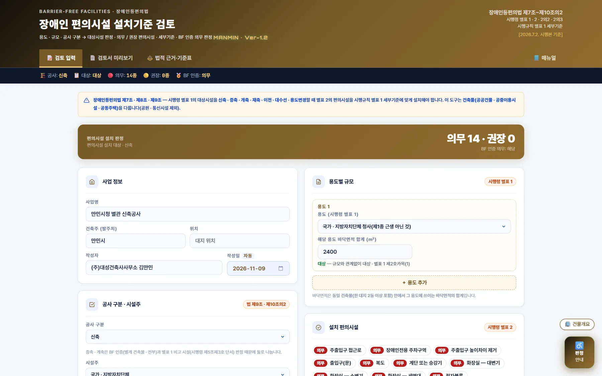
123- 1요약 스트립 — 의무 14종 · BF 의무
- 2판정 배너
- 3공사 구분 신축 · 시설주 국가 · 지방자치단체
- 1의무 14종
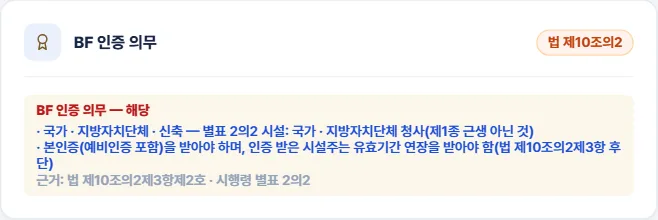
1- 1BF 인증 — 해당
| 항목 | 판정 | 근거 |
|---|---|---|
| 용도 | 국가 · 지방자치단체 청사(제1종 근생 아닌 것) 2,400㎡ — 규모와 관계없이 대상 | 별표 1 제2호카목(1) |
| 의무 14종 | 주출입구 접근로 · 장애인전용 주차구역 · 주출입구 높이차이 제거 · 출입구(문) · 복도 · 계단 또는 승강기 · 화장실 — 대변기 · 화장실 — 소변기 · 화장실 — 세면대 · 점자블록 · 유도 및 안내설비 · 경보 및 피난설비 · 접수대 · 작업대 · 임산부 등을 위한 휴게시설 | 별표 2 업무시설 — 청사 행 |
| 출입구 | 청사(공중 직접 이용) — 장애인등 출입 가능 출입구는 자동문 | 별표 2 제3호가목(4) |
| 승강기 | 지상 7층 · 연면적 2,400㎡ → 6층 이상 · 2천㎡ 이상: 승강기 등 1대(곳) 이상 의무 | 제3호가목(6)(나) |
| BF 인증 | 국가 · 지자체 · 신축 · 별표 2의2 시설 → 의무(예비인증 포함) | 법 제10조의2제3항제2호 |
5-4. 예제 C — 사무소 증축(기존 건축물에 붙여서)
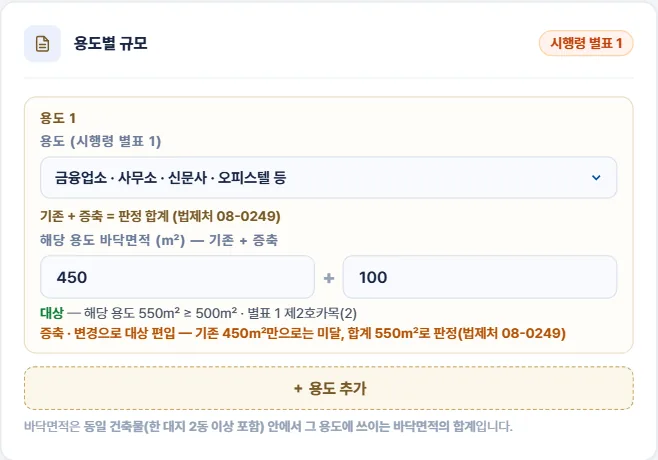
1234- 1기존 + 증축 = 판정 합계
- 2기존 450㎡
- 3증축 100㎡
- 4대상 편입
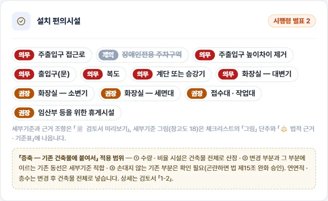
12- 1설치 편의시설(주차 8대 → 제외)
- 2적용 범위 안내
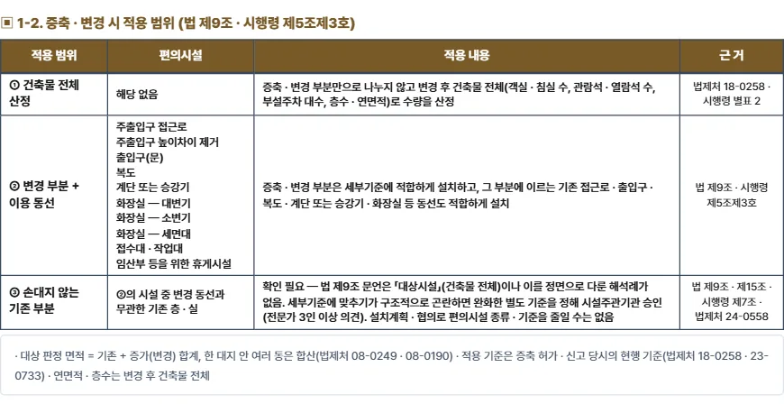
| 항목 | 판정 | 근거 |
|---|---|---|
| 대상 판정 | 기존 450㎡만으로는 500㎡ 미달 → 합계 550㎡ ≥ 500㎡ → 「대상 편입」 | 별표 1 제2호카목(2) · 법제처 08-0249 |
| 편의시설 | 의무 6 · 권장 4 — 부설주차 8대 < 10대라 장애인전용주차구역 제외 | 별표 2 제3호가목(2) 단서 |
| 적용 범위 | ② 증축 부분과 그 부분에 이르는 기존 접근로 · 출입구 · 복도 · 계단 · 화장실은 세부기준 적합 · ③ 손대지 않는 기존 층 · 실은 확인 필요 | 법 제9조 · 제15조 |
| BF 인증 | 「증축 — 기존 건축물에 붙여서」는 의무 인증 공사 구분이 아님 | 법 제10조의2제3항제2호 |
06문제 해결·FAQ
| 증상 | 해결 |
|---|---|
| 배너가 「대상 아님」이다 | 모든 용도가 별표 1 규모에 못 미치거나, 비고 소규모 시설인데 공사 구분이 별개 건축물 증축 · 전부 개축 · 재축이 아닙니다. 용도 칸 아래 판정 문구를 보십시오. |
| 휴게음식점 300㎡를 넣었더니 제2종 기준이 나온다 | 별표 1이 300㎡ 이상 휴게음식점을 제2종 근생으로 분류하기 때문입니다(별표 2 제2종 근생 행). |
| 「확인 필요」가 나왔다 | 별표의 명칭과 선택 용도가 정확히 맞지 않거나 문언 해석이 필요한 경우입니다. 근거 문구를 들고 시설주관기관에 확인하십시오. |
| 장애인 주차 대수가 안 나온다 | 대수는 주차장법령 설치비율과 조례로 정해져 이 도구는 10대 미만 제외 여부만 판정합니다. 「부설주차장 법정대수 산정기」를 쓰십시오. |
| 6층인데 승강기 의무가 안 나온다 | 연면적이 2천㎡ 미만이거나 「6층 · 각 층 거실 300㎡마다 직통계단」 체크가 되어 있습니다. |
| 증축인데 2칸이 안 보인다 | 공사 구분이 「증축 — 기존 건축물에 붙여서」나 「용도변경」일 때만 2칸이 됩니다. 별개 건축물 증축은 신축처럼 1칸입니다. |
| 그림 단추가 인쇄되지 않는다 | 그림 단추는 화면 전용입니다. 그림을 인쇄하려면 「세부기준 그림(참고도) 부록 포함」을 체크하십시오. |
| 매뉴얼이 안 열린다 | 매뉴얼은 인터넷 연결이 필요합니다. 오프라인이면 「매뉴얼은 인터넷 연결 시 열립니다」가 표시됩니다. |
| 예전 화면이 보인다 | 새로 고침(Ctrl+F5) 하거나, 설치한 앱이면 한 번 닫았다가 다시 엽니다. |
A부록
A1. 예제 입력값
| 항목 | 예제 A(초기값) | 예제 B | 예제 C |
|---|---|---|---|
| 사업명 | 만민 근린생활시설 신축공사 | 만민시청 별관 신축공사 | 만민빌딩 증축공사 |
| 공사 구분 · 시설주 | 신축 · 민간 | 신축 · 국가 · 지방자치단체 | 증축(기존 건축물에 붙여서) · 민간 |
| 연면적 · 층수 | 1,680㎡ · 지상 5층 / 지하 1층 | 2,400㎡ · 지상 7층 / 지하 1층 | 550㎡ · 지상 3층 |
| 부설주차 | 14대 | 30대 | 8대 |
| 용도 | 사무소 1,200㎡ + 휴게음식점 180㎡ | 국가 · 지자체 청사 2,400㎡ | 사무소 기존 450㎡ + 증축 100㎡ |
| 판정 | 의무 7 · 권장 4 · BF 해당 없음 | 의무 14 · 권장 0 · BF 의무 | 의무 6 · 권장 4 · 대상 편입 · BF 해당 없음 |
A2. 버전 변경 내역
| 버전 | 내용 |
|---|---|
| Ver-1.2 · v1.2.1 (2026-11-09) | 사용자 매뉴얼 연결 — 탭 막대 「📘 매뉴얼」 · 판정 안내 창 증축 문구를 v1.2 적용 범위 규칙과 맞춤 |
| Ver-1.2 · v1.2.0 (2026-11-09) | 증축 · 변경 시 적용 범위 — 기존 + 증가 2칸 입력 · 대상 편입 표시 · 적용 범위 3단계 · 검토서 1-2절 |
| Ver-1.1 · v1.1.0 (2026-11-09) | 세부기준 그림(참고도) SVG 18 — 체크리스트 그림 단추 · 기준표 그림 모음 · 인쇄 부록 선택 |
| Ver-1.0 · v1.0.0 (2026-11-09) | 첫 공개 — 별표 1 대상 판정 · 별표 2 의무/권장 · 세부기준 체크리스트 · BF 인증 의무 판정 |
A3. 용어
| 용어 | 뜻 |
|---|---|
| 장애인등 | 장애인 · 노인 · 임산부 등 일상생활에서 이동 · 시설 이용 · 정보 접근에 불편을 느끼는 사람(법 제2조) |
| 대상시설 | 편의시설을 설치해야 하는 시설 — 공원 · 공공건물 및 공중이용시설 · 공동주택 · 통신시설(시행령 별표 1) |
| 편의시설 | 장애인등이 생활 속에서 이동 · 시설 이용 편리를 위해 설치하는 시설 · 설비(별표 2의 19종) |
| 시설주 · 시설주관기관 | 대상시설의 소유 · 관리자 / 지도 · 감독하는 관계 행정기관(허가권자 등) |
| 해당 용도 바닥면적 | 동일한 건축물 안에서 그 용도에 쓰이는 바닥면적의 합계 — 한 대지 안 2동 이상은 동일한 건축물 |
| 비고 공중이용시설 | 별표 1 비고의 소규모 시설 — 별개 건축물 증축 · 전부 개축 · 재축일 때만 적용(시행령 제5조제3호 단서) |
| 대상 편입 | 기존 부분만으로는 대상이 아니었으나 증축 · 용도변경 후 합계로 대상이 된 경우 |
| BF 인증 | 장애물 없는 생활환경 인증 — 의무 대상은 법 제10조의2제3항 |
| 예비인증 · 본인증 | 설계 단계에서 받는 인증 / 준공 후 받는 인증 |